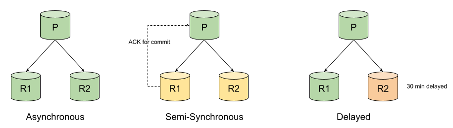
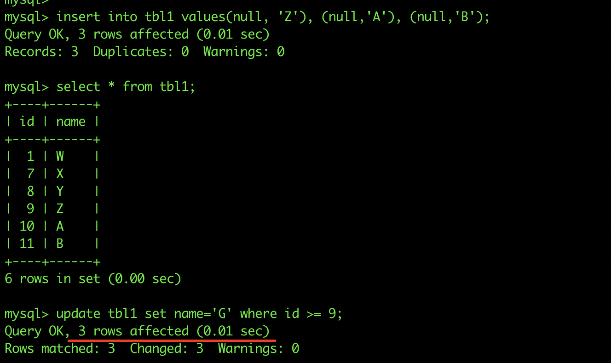
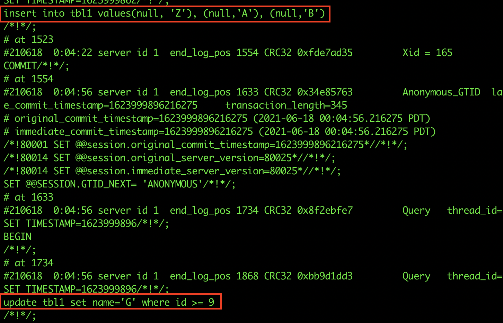
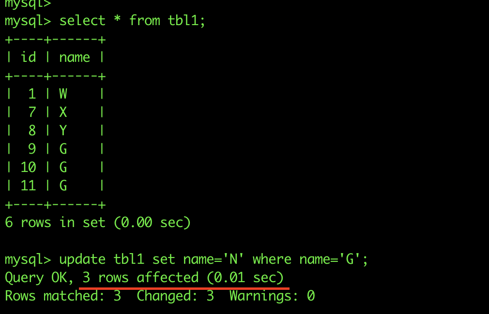
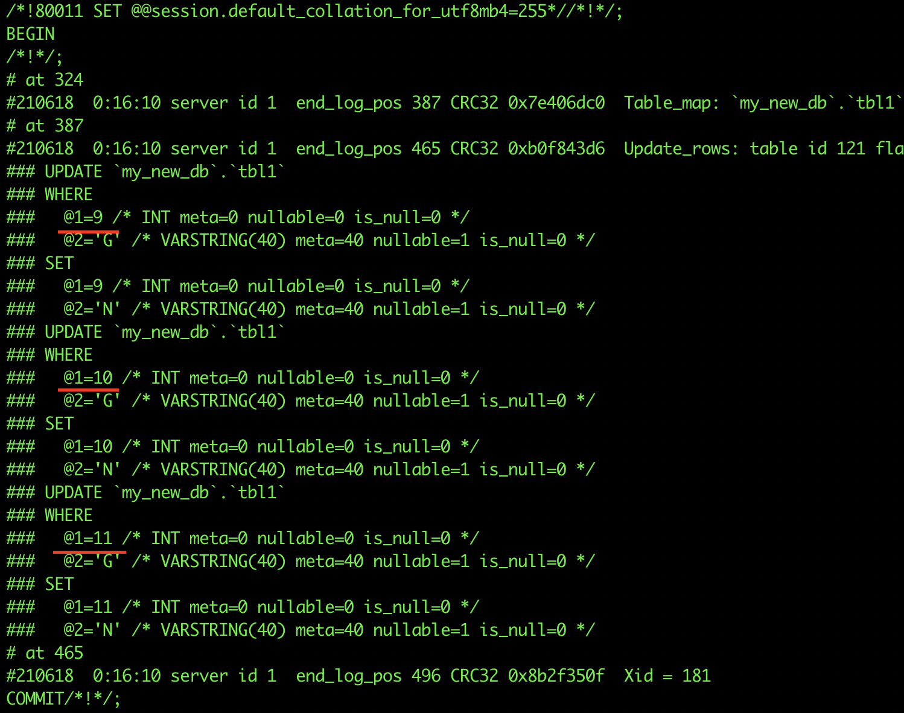
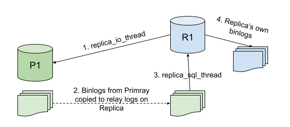
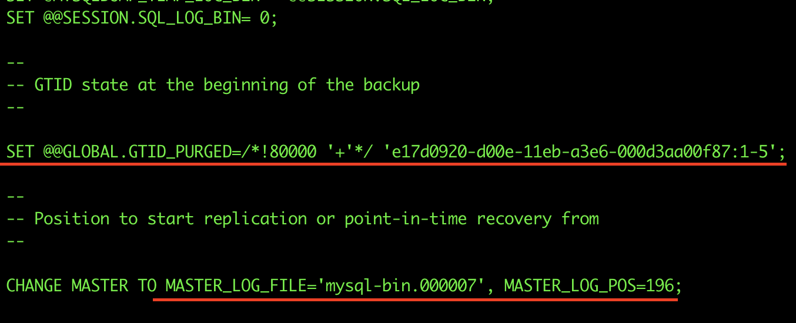

MySQL 複製
MySQL 複寫
複寫允許將一個 MySQL 主機（稱為主要主機 Primary）的資料複製到另一個 MySQL 主機（稱為副本 Replica）。MySQL 複寫預設為非同步（asynchronous），但透過一些設定可改為半同步（semi-synchronous）。
MySQL 複寫的一些常見應用：
- 讀取擴充 (Read-scaling) - 因多個主機可從單一主要主機複寫資料，我們可以設定任意數量的副本，並透過它們負載均衡讀取。例如應用程式的寫入全部導向主要主機，而讀取則分散在所有副本上。這種架構也能提升寫入效能，因主要主機只負責更新不需同時處理讀取。
- 利用副本備份 - 備份過程有時候較為繁重，如果已設定副本，可以直接從其中一個副本備份資料，不會影響主要主機的資料。
- 災難復原 - 在不同地理位置配置副本，有助建立健全的災難復原方案。
MySQL 支援不同類型的同步方式：
- 非同步 (Asynchronous) - 為預設同步方式。為單向同步，即一主多從。本章節將以此方式介紹複寫主題。

- 半同步 (Semi-Synchronous) - 在此同步模式中，主要主機的提交操作會被阻塞，直到至少一個副本確認收到該提交。收到確認後，控制權返回執行該交易的 session。此方式確保強一致性，但複寫速度比非同步慢。
- 延遲複寫 (Delayed) - 可刻意延遲副本複寫的時間（以秒為單位），用以避免主要主機因人為錯誤而導致資料損毀的問題。例如，當主要主機誤執行
DROP DATABASE，延遲複寫的副本會有一段時間不會執行該命令，這時可以從副本恢復資料。
前置知識
在設定複寫之前，我們需要了解二進位日誌（binary logs）。二進位日誌是 MySQL 複寫中非常重要的部分。二進位日誌（常稱為 binlogs）紀錄對資料庫的變更事件，如表結構變更、DML 操作等資料變更。不會紀錄 SELECT 語句。主要主機將透過 binlogs 將變更資訊傳送給副本，副本再根據這些資訊改變自身資料。
關於 MySQL 複寫，二進位日誌格式可分二種：
- 陳述式複寫（Statement-Based Replication，SBR）
- 列式複寫（Row-Based Replication，RBR）
陳述式二進位日誌格式
最初，MySQL 複寫依據 SQL 陳述式來複製並在副本上執行，稱為陳述式紀錄。binlog 紀錄所執行的完整 SQL 陳述式。

若執行上圖所示插入 3 筆資料及更新 3 筆的陳述式，binlog 會如實記錄相同內容。

列式二進位日誌格式
最新的 MySQL 版本預設使用列式格式。與陳述式不同，此格式紀錄的是列事件（row events）而非完整 SQL 陳述式。上述更新 3 筆資料的例子，若為列式格式，binlog 會有三筆獨立的更新事件。


陳述式 vs 列式二進位日誌
以下比較兩者的操作差異：
| 陳述式 | 列式 |
|---|---|
| 紀錄執行的 SQL 陳述式 | 根據 SQL 陳述式紀錄列事件 |
| 佔用磁碟空間較少 | 佔用磁碟空間較多 |
| 使用 binlogs 還原較快 | 使用 binlogs 還原較慢 |
若陳述式含有內建函數（如 sysdate(), uuid()），副本輸出可能與主要不同，導致不一致 |
執行內容皆轉成含實際值的列事件，使用此類函式不會有問題 |
| 僅紀錄陳述式，不會產生其他列事件 | 當使用 INSERT INTO SELECT 複製整張表時會產生大量事件 |
注意：另一種 binlog 格式稱為 Mixed，預設為陳述式，必要時切換成列式。當 MySQL 判斷陳述式紀錄不安全時，會發出警告並改用列式紀錄。
本章節複寫教學皆以列式 (Row) 當作二進位日誌格式。
複寫運作流程

圖示描述典型 MySQL 複寫機制：
Replica_IO_Thread負責從主要主機的二進位日誌取得事件到副本主機。- 副本主機產生中繼日誌（relay logs），內容為主要主機的二進位日誌複本。如果主要主機是列式格式，中繼日誌亦同。
Replica_SQL_Thread將中繼日誌套用到副本 MySQL 服務。- 若副本啟用
log-bin，將自行產生二進位日誌。若同時啟用log-slave-updates，副本也會記錄從主要主機接收到的更新，用於連鎖複寫 (chain replication)。
複寫設定
本節將示範如何設定基本的非同步列式複寫。複寫在兩台全新主機上進行，主機上無任何資料。複寫設定有兩種方式：
- 基於 binlog - 副本維護目前讀取的主機二進位日誌檔名及位置，各副本可同時讀取同一 binlog 的不同部分。
- 基於 GTID - 每個交易有唯一的全域交易識別碼（GTID），副本只需追蹤已執行的 GTID 集合即可保持與主要主機同步。典型 GTID 格式為
server_uuid:#。
下述範例將以 GTID 為基礎完成設定，但也會提及 binlog 方式。
主要主機設定
my.cnf 需包含以下參數：
server-id - 唯一的 MySQL 伺服器 ID
log-bin - 開啟二進位日誌並指定位置
binlog-format - 設定為 ROW（列式）或 STATEMENT（陳述式），本章使用 ROW
gtid-mode - ON
enforce-gtid-consistency - ON（只允許可被 GTID 紀錄的語句）
副本主機設定
my.cnf 需包含下列參數：
server-id - 與主要主機不同
log-bin -（可選）若想紀錄副本自身更新
binlog-format - 根據主要主機設定
gtid-mode - ON
enforce-gtid-consistency - ON
log-slave-updates - ON（若開啟 log-bin，推薦開啟以支援連鎖複寫）
複寫用戶
副本透過 MySQL 使用者連接主要主機以執行複寫，其帳號必須擁有 REPLICATION SLAVE 權限。建議新建專用於複寫的帳戶。
在主要主機執行：
mysql> CREATE USER repl_user@<replica_IP> IDENTIFIED BY 'xxxxx';
mysql> GRANT REPLICATION SLAVE ON *.* TO repl_user@'<replica_IP>';
取得複寫起始位置
於主要主機執行：
mysql> SHOW MASTER STATUS\G
*************************** 1. row ***************************
File: mysql-bin.000001
Position: 73
Binlog_Do_DB:
Binlog_Ignore_DB:
Executed_Gtid_Set: e17d0920-d00e-11eb-a3e6-000d3aa00f87:1-3
1 row in set (0.00 sec)
若為 binlog 複寫，前兩行為重要資訊，指明目前的 binlog 檔名與位置。全新主機可從第一個 binlog 檔案位置 4 開始設定。若是從備份復原，起始位置依備份設定而定。
使用 GTID 複寫則關注 Executed_Gtid_Set 欄位，指明目前已執行的 GTID 範圍。全新環境不需指定起點，即從第一個交易開始。
設定副本
必須讓副本知道主要主機位址、連線帳密，以及起始 binlog 位置或 GTID auto-position。
GTID 複寫設定示範：
CHANGE MASTER TO
master_host = '<primary host IP>',
master_port = <primary host port - 預設為 3306>,
master_user = 'repl_user',
master_password = 'xxxxx',
master_auto_position = 1;
注意：MySQL 8.0.23 起，CHANGE MASTER TO 改名為 CHANGE REPLICATION SOURCE TO，且所有 master 與 slave 關鍵字改為 source 與 replica。
若為 binlog 複寫，需指定 binlog 檔案與位置：
master_log_file = 'mysql-bin.000001',
master_log_pos = 4
啟動複寫並檢查狀態
設定好後，啟動複寫：
START SLAVE;
或 MySQL 8.0.23 之後：
START REPLICA;
確認複寫狀態：
SHOW SLAVE STATUS\G
或 MySQL 8.0.23 之後：
SHOW REPLICA STATUS\G
執行輸出範例：
mysql> SHOW REPLICA STATUS\G
*************************** 1. row ***************************
Replica_IO_State: Waiting for master to send event
Source_Host: <primary IP>
Source_User: repl_user
Source_Port: <primary port>
Connect_Retry: 60
Source_Log_File: mysql-bin.000001
Read_Source_Log_Pos: 852
Relay_Log_File: mysql-relay-bin.000002
Relay_Log_Pos: 1067
Relay_Source_Log_File: mysql-bin.000001
Replica_IO_Running: Yes
Replica_SQL_Running: Yes
Replicate_Do_DB:
Replicate_Ignore_DB:
Replicate_Do_Table:
Replicate_Ignore_Table:
Replicate_Wild_Do_Table:
Replicate_Wild_Ignore_Table:
Last_Errno: 0
Last_Error:
Skip_Counter: 0
Exec_Source_Log_Pos: 852
Relay_Log_Space: 1283
Until_Condition: None
Until_Log_File:
Until_Log_Pos: 0
Source_SSL_Allowed: No
Source_SSL_CA_File:
Source_SSL_CA_Path:
Source_SSL_Cert:
Source_SSL_Cipher:
Source_SSL_Key:
Seconds_Behind_Source: 0
Source_SSL_Verify_Server_Cert: No
Last_IO_Errno: 0
Last_IO_Error:
Last_SQL_Errno: 0
Last_SQL_Error:
Replicate_Ignore_Server_Ids:
Source_Server_Id: 1
Source_UUID: e17d0920-d00e-11eb-a3e6-000d3aa00f87
Source_Info_File: mysql.slave_master_info
SQL_Delay: 0
SQL_Remaining_Delay: NULL
Replica_SQL_Running_State: Slave has read all relay log; waiting for more updates
Source_Retry_Count: 86400
Source_Bind:
Last_IO_Error_Timestamp:
Last_SQL_Error_Timestamp:
Source_SSL_Crl:
Source_SSL_Crlpath:
Retrieved_Gtid_Set: e17d0920-d00e-11eb-a3e6-000d3aa00f87:1-3
Executed_Gtid_Set: e17d0920-d00e-11eb-a3e6-000d3aa00f87:1-3
Auto_Position: 1
Replicate_Rewrite_DB:
Channel_Name:
Source_TLS_Version:
Source_public_key_path:
Get_Source_public_key: 0
Network_Namespace:
1 row in set (0.00 sec)
重要參數說明：
| 參數 | 說明 |
|---|---|
| Relay_Source_Log_File | 副本目前讀取的主要主機 binlog 檔案 |
| Exec_Source_Log_Pos | 此檔案中副本目前讀取的位置，binlog 複寫時非常重要 |
| Replica_IO_Running | IO 執行緒是否正在運行 |
| Replica_SQL_Running | SQL 執行緒是否正在運行 |
| Seconds_Behind_Source | 副本落後於主要主機的秒數，表示複寫時延 |
| Source_UUID | 主要主機的 UUID |
| Retrieved_Gtid_Set | 副本已從主機取得待執行的 GTID 集合 |
| Executed_Gtid_Set | 副本已執行的 GTID 集合，集群同步時應保持一致 |
| Auto_Position | 指示副本自動抓取下一筆 GTID |
為已建叢集新增副本
之前說明的複寫設定適用於兩台全新主機。當主機已執行應用服務，須從備份建立副本，方法如下：
若主要主機資料庫小於約 100G，建議使用 mysqldump 備份，搭配下列參數：
mysqldump -uroot -p -hhost_ip -P3306 --all-databases --single-transaction --master-data=1 > primary_host.bkp
--single-transaction：以交易方式備份，確保一致性，備份期間寫入不會影響結果。--master-data：備份檔中包含二進位日誌檔名和位置，設置 binlog 複寫時需用。
啟用 GTID 後，mysqldump 會在備份檔中包含可用以啟動副本的 GTID 資訊。

建議還原時先把 GTID 註解掉，避免錯誤。使用 master-data=2 則會自動註解。
使用 xtrabackup 備份時，會在 xtrabackup_info 檔案中紀錄 binlog 檔名、位置及執行的 GTID 集合。
server_version = 8.0.25
start_time = 2021-06-22 03:45:17
end_time = 2021-06-22 03:45:20
lock_time = 0
binlog_pos = filename 'mysql-bin.000007', position '196', GTID of the last change 'e17d0920-d00e-11eb-a3e6-000d3aa00f87:1-5'
innodb_from_lsn = 0
innodb_to_lsn = 18153149
partial = N
incremental = N
format = file
compressed = N
encrypted = N
在新主機安裝 MySQL 服務後，還原備份。
若採 binlog 複寫，執行：
CHANGE REPLICATION SOURCE TO
source_host = ‘primary_ip’,
source_port = 3306,
source_user = ‘repl_user’,
source_password = ‘xxxxx’,
source_log_file = ‘mysql-bin.000007’,
source_log_pos = ‘196’;
若使用 GTID 複寫，告訴副本已執行 GTID 如下：
RESET MASTER;
SET GLOBAL gtid_purged = ‘e17d0920-d00e-11eb-a3e6-000d3aa00f87:1-5’;
CHANGE REPLICATION SOURCE TO
source_host = ‘primary_ip’,
source_port = 3306,
source_user = ‘repl_user’,
source_password = ‘xxxxx’,
source_auto_position = 1;
RESET MASTER 將二進位日誌位置重置。若主機是全新安裝可省略，但還原備份時建議執行。gtid_purged 讓副本知道已執行 GTID 範圍，auto_position=1 則自動從下一個 GTID 開始。